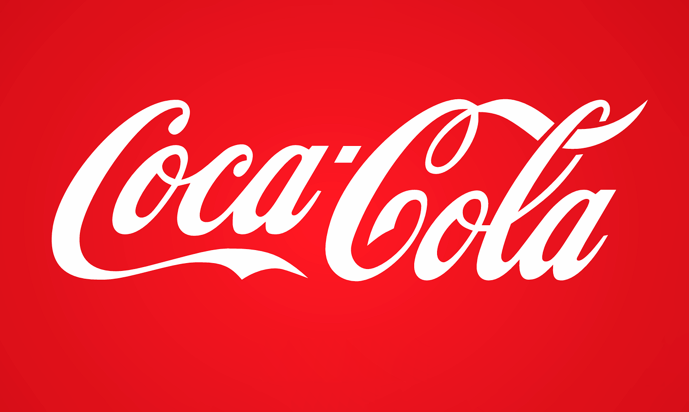
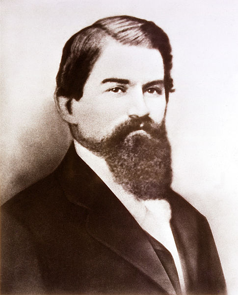

A Coca-Cola é uma das marcas de bebidas mais conhecidas do mundo. Criada em 1886, nos Estados Unidos, a marca ficou conhecida principalmente pelo seu refrigerante de cola. Ao longo dos anos, a empresa cresceu e passou a oferecer diversos produtos, tornando-se uma grande referência no mercado de bebidas.

A Coca-Cola se tornou conhecida não apenas pelo seu produto, mas também pela sua identidade visual. Sua garrafa, o logotipo e as cores utilizadas nas campanhas ajudaram a tornar a marca facilmente reconhecida. A empresa também ficou famosa por suas estratégias de publicidade e campanhas associadas a momentos de felicidade e convivência.
Além dos produtos, a marca também ficou conhecida por suas propagandas e pelo seu logotipo, que se tornou facilmente reconhecido em vários países. Atualmente, a Coca-Cola está presente em diferentes partes do mundo e continua sendo uma das principais empresas do mercado de bebidas.

A história da Coca-Cola começou em 1886, na cidade de Atlanta, nos Estados Unidos. A bebida foi criada pelo farmacêutico John Stith Pemberton, que desenvolveu uma nova receita que seria inicialmente comercializada como uma bebida refrescante. A primeira Coca-Cola foi vendida em uma farmácia de Atlanta e, com o passar do tempo, começou a chamar a atenção dos consumidores.
A bebida ganhou popularidade e passou a ser comercializada em outros locais. A marca também começou a investir em publicidade, ajudando a tornar o nome Coca-Cola cada vez mais conhecido. Com o crescimento das vendas, a empresa expandiu seus negócios e passou a distribuir o produto para diferentes regiões.
Durante os anos seguintes, a Coca-Cola desenvolveu uma identidade visual marcante, com seu famoso logotipo e sua tradicional embalagem. A empresa também criou diferentes campanhas de publicidade para divulgar seus produtos. Com sua expansão internacional, a Coca-Cola chegou a diversos países e se tornou uma marca reconhecida mundialmente.